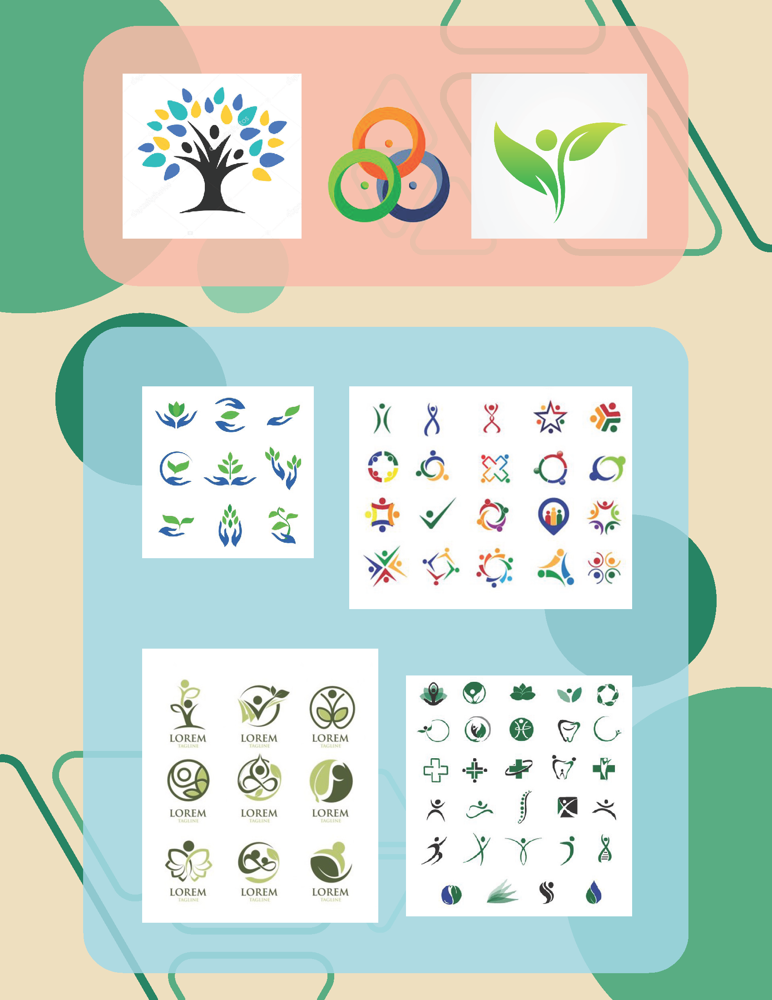
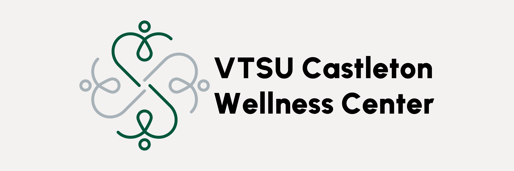
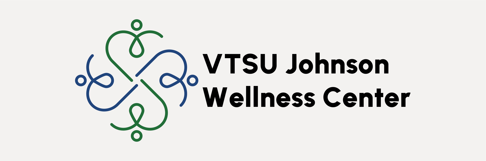
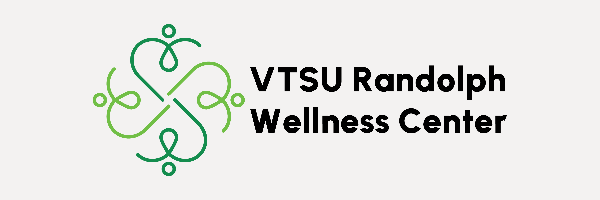
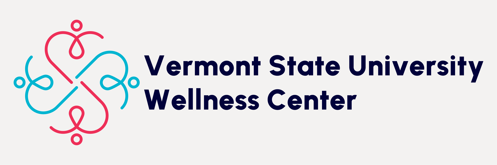

In the fall of 2024, the VTSU Wellness Center approached our class with a request to
redesign their logo and brand identity. Prior to this, each campus within the Vermont State University
system - Castleton University, Vermont Technical College, and Northern Vermont University (comprising Johnson
State College and Lyndon State College) — had developed their own individual identities. However,
these identities lacked cohesion and alignment with the overarching VTSU brand. The Wellness Center
sought a unified design that would embody wellness while seamlessly integrating into the VTSU brand identity.
To initiate the design process, I developed a comprehensive creative brief and mood board.
These tools guided my exploration of themes such as holistic wellness, inclusivity, and the diverse
identities of each campus. A central concept emerged: creating a primary logo composed of four
individual elements, each representing one of the four colleges within VTSU. This approach symbolized
the unity and collaboration among the campuses.
Creative Brief Pages
|  |  |
 |
Throughout the design process, I focused on incorporating elements that conveyed themes of wellness
and growth. The final logo features a stylized human figure, a heart shape, and a clover—symbols associated
with vitality and well-being. Each campus's identity is represented through distinct color palettes,
reflecting their unique histories and cultures. Notably, I chose to exclude the Northern Vermont University
colors, as the institution was relatively short-lived, and I felt that the individual campus colors
provided a more authentic representation.
The culmination of this project was a set of logos for each campus along with a unified VTSU Wellness Center logo.
These designs were accompanied by a comprehensive graphic standards guide to ensure consistent application
across various platforms and materials. The final deliverables were presented to the Wellness Center, providing
them with a cohesive and adaptable brand identity that reflects both their mission and the diverse communities
they serve.
Final Logo Designs
|  |  |  |
 |  |
A link to the full Graphic Standards can be found
here.